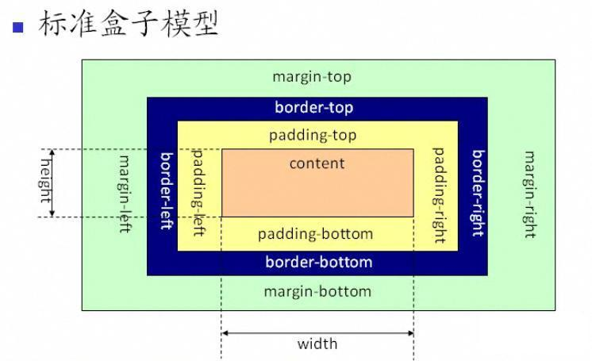

盒子模型
盒子模型是css中一个重要的概念，理解了盒子模型才能更好的排版。其实盒子模型有两种，分别是 ie 盒子模型和标准 w3c 盒子模型。他们对盒子模型的解释各不相同，先来看看我们熟知的标准盒子模型：
从上图可以看到标准 w3c 盒子模型的范围包括 margin、border、padding、content，并且 content 部分不包含其他部分。

从上图可以看到 ie 盒子模型的范围也包括 margin、border、padding、content，和标准 w3c 盒子模型不同的是：ie 盒子模型的 content 部分包含了 border 和 pading。
例：一个盒子的 margin 为 20px，border 为 1px，padding 为 10px，content 的宽为 200px、高为 50px，假如用标准 w3c 盒子模型解释，那么这个盒子需要占据的位置为：宽 20*2+1*2+10*2+200=262px、高 20*2+1*2*10*2+50=112px，盒子的实际大小为：宽 1*2+10*2+200=222px、高 1*2+10*2+50=72px；假如用ie 盒子模型，那么这个盒子需要占据的位置为：宽 20*2+200=240px、高 20*2+50=70px，盒子的实际大小为：宽 200px、高 50px。
那应该选择哪中盒子模型呢？当然是“标准 w3c 盒子模型”了。怎么样才算是选择了“标准 w3c 盒子模型”呢？很简单，就是在网页的顶部加上 doctype 声明。假如不加 doctype 声明，那么各个浏览器会根据自己的行为去理解网页，即 ie 浏览器会采用 ie 盒子模型去解释你的盒子，而 ff 会采用标准 w3c 盒子模型解释你的盒子，所以网页在不同的浏览器中就显示的不一样了。反之，假如加上了 doctype 声明，那么所有浏览器都会采用标准 w3c 盒子模型去解释你的盒子，网页就能在各个浏览器中显示一致了。
再用 jquery 做的例子来证实一下。
代码1：
<html>
<head>
<title>你用的盒子模型是？</title>
<script language="javascript" src="jquery.min.js"></script>
<script language="javascript">
var sbox = $.boxmodel ? "标准w3c":"ie";
document.write("您的页面目前支持："+sbox+"盒子模型");
</script>
</head>
<body>
</body>
</html>
上面的代码没有加上 doctype 声明，在 ie 浏览器中显示“ie盒子模型”，在 ff 浏览器中显示“标准 w3c 盒子模型”。
代码2：
<!doctype html public "-//w3c//dtd xhtml 1.0 transitional//en" "http://www.w3.org/tr/xhtml1/dtd/xhtml1-transitional.dtd">
<html>
<head>
<title>你用的盒子模型是标准w3c盒子模型</title>
<script language="javascript" src="jquery.min.js"></script>
<script language="javascript">
var sbox = $.boxmodel ? "标准w3c":"ie";
document.write("您的页面目前支持："+sbox+"盒子模型");
</script>
</head>
<body>
</body>
</html>
代码2 与代码1 唯一的不同的就是顶部加了 doctype 声明。在所有浏览器中都显示“标准 w3c 盒子模型”。
所以为了让网页能兼容各个浏览器，让我们用标准 w3c 盒子模型。